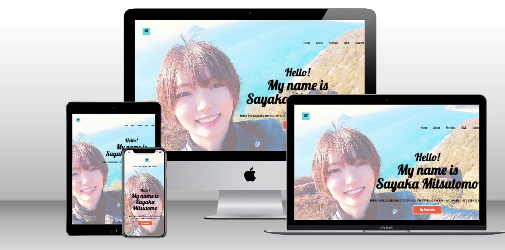
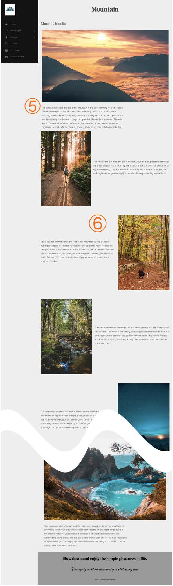

Portfolio
作成した作品を掲載しています。
作品数と技術力は少ないですが、愛情と情熱を込めて作りました。
Utopia
架空の地域紹介サイト
| ペルソナ | ・都会暮らしに疲れて田舎で静かにリラックスしたい人 ・アウトドアのアクティビティが好きな人 |
|---|---|
| 制作期間 | デザイン: 7日 / コーディング: 1ヶ月 |
| 使用技術 | HTML / CSS / JavaScript |
| 対応機種 | Desktop / Laptop / Tablet / SP |
なぜこのサイトを作ったのか:
初めは地域に根付いたサイトを作ろうと考え、岡山市内のイベントカレンダーのようなものを作ろうと思っていました。しかし、写真の著作権問題につまづきUnsplashで豊富にある海外の素材を使うことにしました。そこから、架空の地域紹介サイトを作る方針に切り替えました。
改善点:
・最初にトップページを開いた時のグローバルナビゲーションの文字の読み込みと、ギャラリーの写真の読み込みが遅い。
・宿泊施設の予約ができたり、ブログのような日々現地の情報が更新される実用的な機能があると良い。
・レスポンシブデザインだとスクロール距離が長くなりすぎるところがある。
Portfolio

ポートフォリオのトップページ
| 制作期間 | 11日 (デザイン: 1日 / コーディング: 10日) |
|---|---|
| 使用技術 | HTML / CSS |
| 対応機種 | Desktop / Laptop / Tablet / SP |
工夫した点:
・誰のサイトか一目でわかるようにした。・全体的に青色のサイトなので、ボタンをオレンジにすることでクリック率に繋げようと意識した。
改善点:
・Portfolioページが縦長すぎて少し読みにくいため、パッと見でも分かりやすいレイアウトにした方が良い。・作品数が少ないから仕方ないが、自己主張が強すぎる。
① ユーザーにとってページの行き来がしやすいように、左側にグローバルナビゲーションを固定で配置した。レスポンシブデザインでは、右上に固定でハンバーガーメニューを配置。
ドロップダウンメニューでページ内のジャンルごとにも動きやすいように配慮した。
GoogleのMaterial Symbols and Iconsを使って、文字だけでなくアイコンで見て分かりやすさを意識。
② 画像を全画面表示にすることによって、トップページのインパクトかつアイキャッチになるようにした。
ユーザーの興味を引くためにも、JavaScriptで動きのあるスライドショーを作成した。
③ スライドショーで全画面が埋まるため、下部にもページが続いていることを知らせて誘導するためにスクロールダウンを配置。
④ それぞれの画像をクリックできることを示すためにホバー時に変化が出るようにした。またディスプレイの幅に応じて配置が変わるようにした。
⑤ 可読性のためにテキストの幅が広くなりすぎないようにした。
⑥レイアウトとして、テキストと画像を左右交互に配置することでユーザーの視線の動きを意識した。
⑦ Swiperの外部JavaScriptライブラリを使いながら、ホームページのとはまた異なる形のスライドショーを作成。矢印だけでなく、画像をクリックしても操作できる操作性の自由度を意識。
⑧ ポートフォリオのコンタクトフォームとは異なる、このサイトにあったシンプルかつ使いやすいデザインになるように意識。実際に文字を打ち込む際に、メッセージ欄の幅が狭すぎたり広すぎたりしないか気をつけた。
⑨ GLightboxとMuuriという外部のJavaScriptライブラリも使いながら、ギャラリーを実現。カテゴリ別に画像を並び替える機能と、画像をクリックすると拡大表示されると同時にキャプションも表示されるようにし、ユーザーにとって使いやすさ、分かりやすさを考慮。